My World · visual test
10/11/2026, 9:01:04 AM · http://127.0.0.1:36287
17 of 17 checks passed
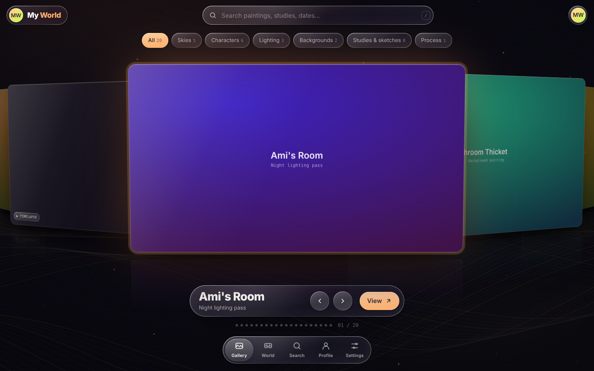
HomeThe liquid-glass home, as it was.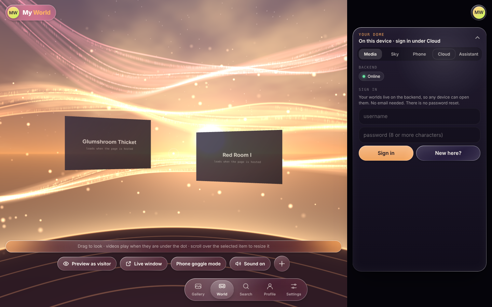
World tab → CloudNot signed in yet. The chips say whether the server is reachable.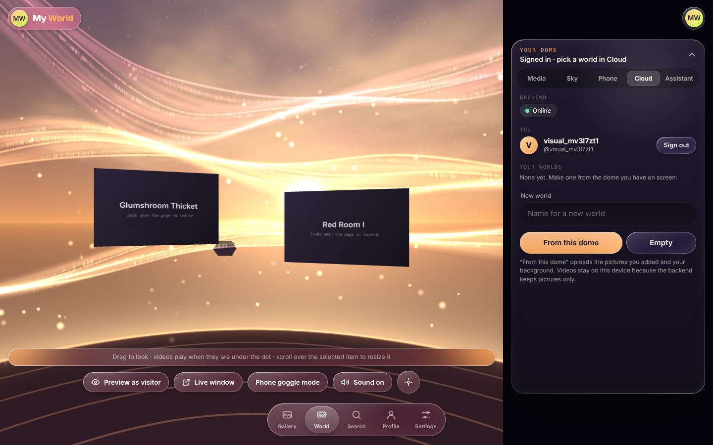
Signed inWorlds live on the server, so you can open them anywhere.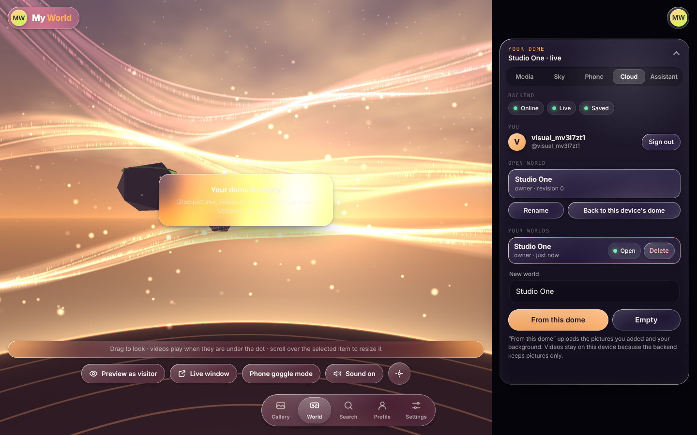
A world, openLive connection and saved state show here.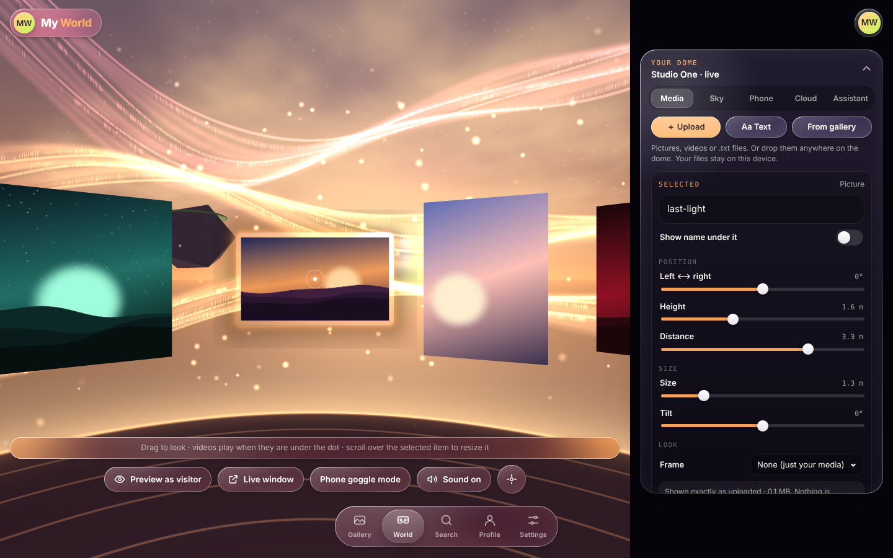
Pictures addedEach picture is uploaded untouched and hung in the dome.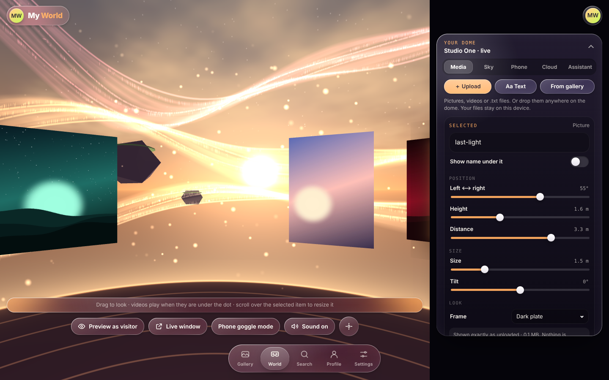
EditedMoved, enlarged and framed one picture; changed the sky.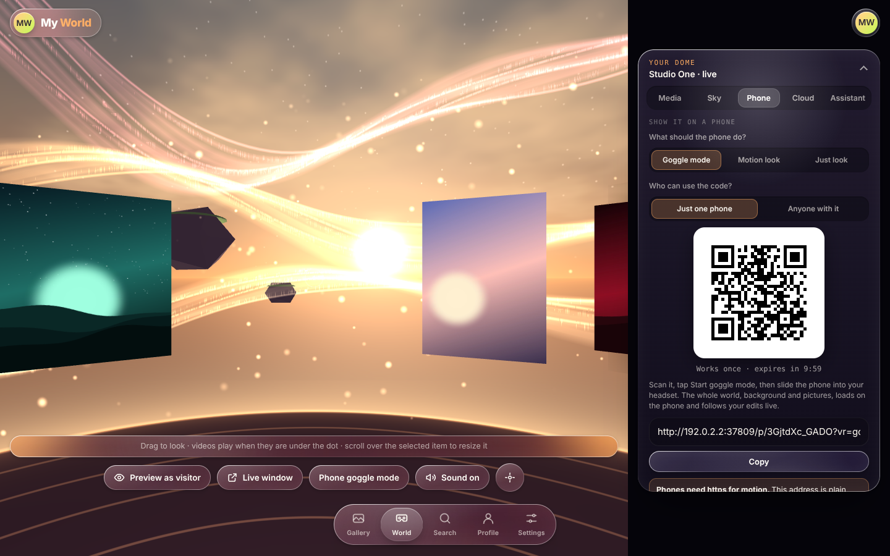
Phone tab: the QR codeScanning it opens the world on a phone, signed in as a viewer, ready for goggle mode.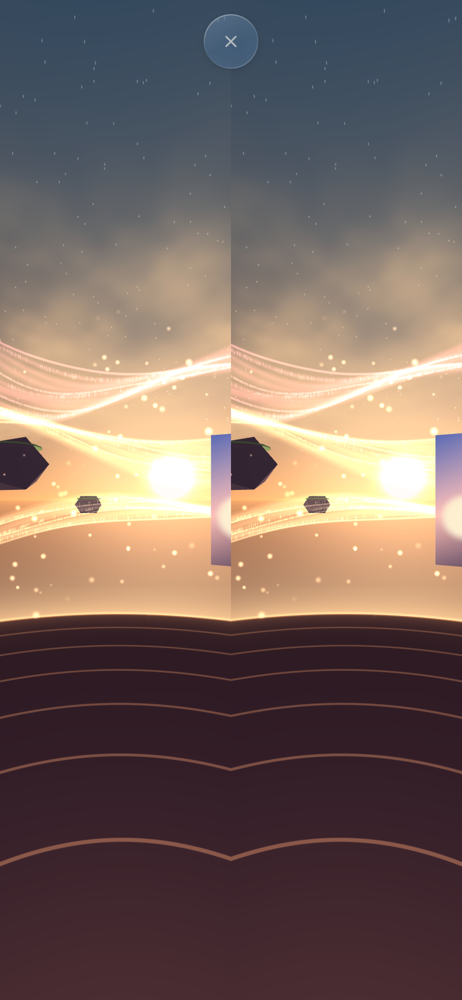
Phone: goggle modeTwo eyes, one per half of the screen. Put it in a headset or cardboard viewer.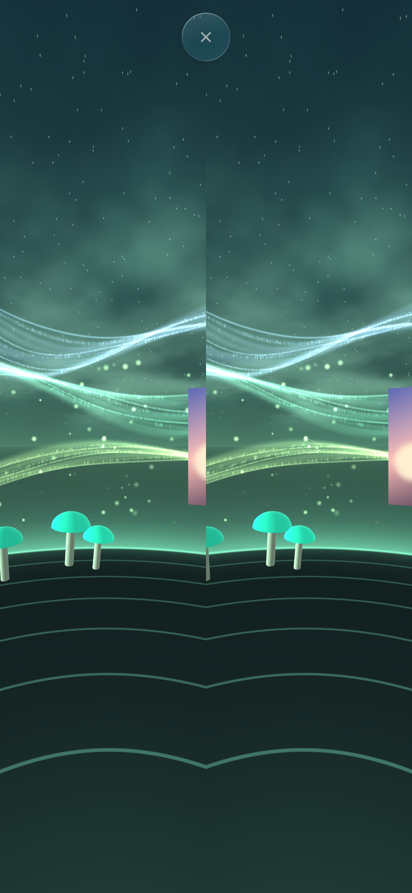
Phone: after a live editThe creator moved a picture and changed the sky; the phone followed without a refresh.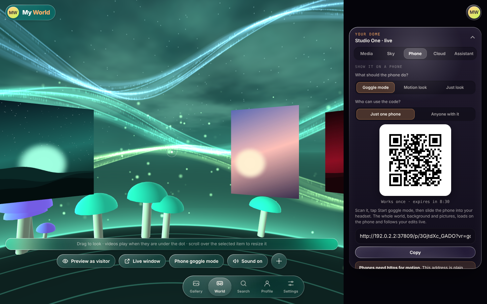
Editor: same moment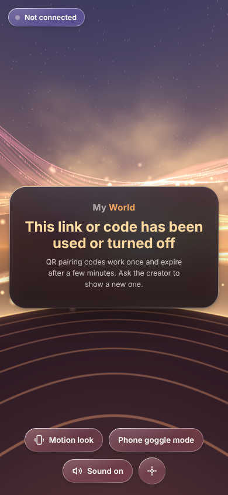
Phone: a used codePlain words, and a way forward.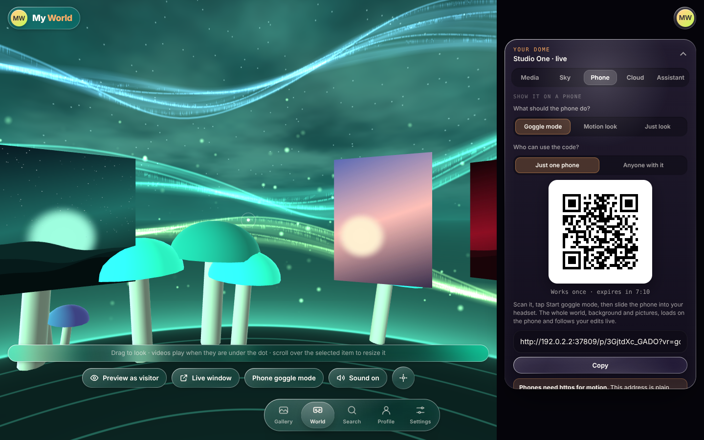
Phone tab: link modeAnyone with the link can look. Choose motion look instead of goggles.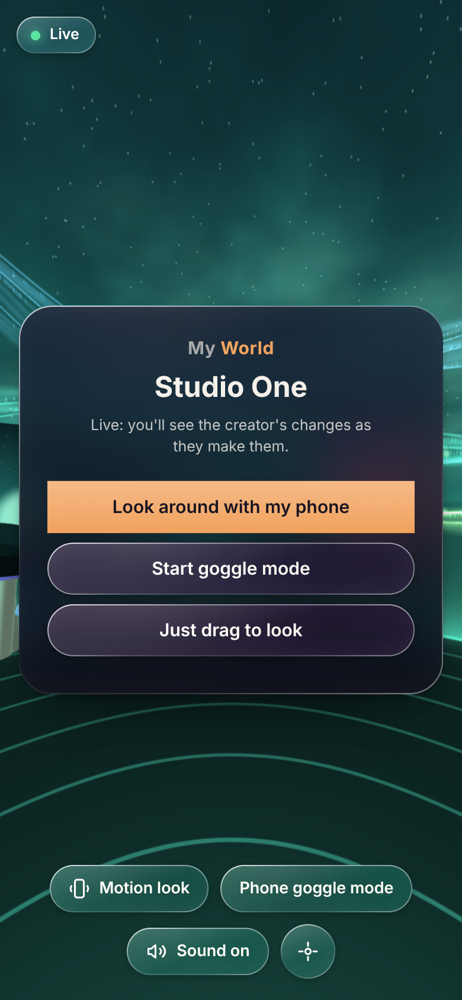
Phone: opened from a linkMotion look is the main button because the QR code asked for it.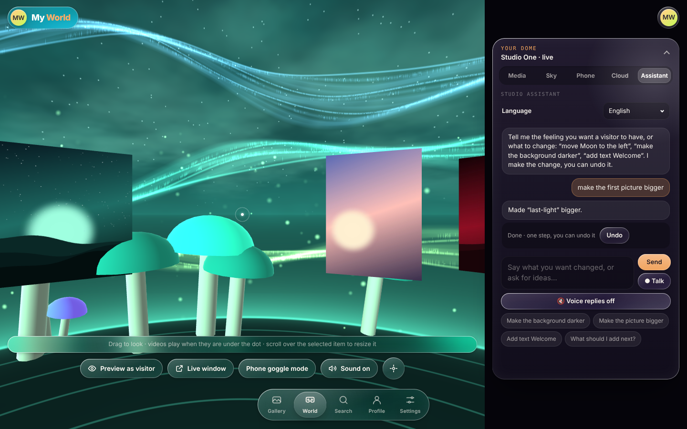
AssistantEditor-only. It runs on the server; the key never reaches the browser.Checks
- ✓ the web page can reach the backend
- ✓ a new world is open and connected
- ✓ all 6 pictures are on the server as artwork nodes (6)
- ✓ moving a picture and changing the sky reach the server in the right place
- ✓ the QR code holds a one-time pairing address that asks for goggle mode
- ✓ a QR code is drawn
- ✓ the phone joined from the code alone and has all 6 pictures
- ✓ the phone has the creator's sky
- ✓ the QR code started goggle mode by itself (Android; an iPhone shows one Start button)
- ✓ every picture loaded on the phone
- ✓ an edit made on the computer shows up on the phone a moment later
- ✓ the same QR code can't be used a second time
- ✓ a link opens the world on a phone
- ✓ after the creator makes a new link, the old one stops working
- ✓ the assistant answered in the panel with a one-step Undo
- ✓ the change appeared in the dome
- ✓ no errors in the browser console